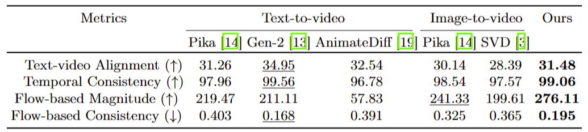

In this paper, we present Co-dreamer, a controllable and training-free text-to-video framework. Co-dreamer decomposes video generation into automated stages, including the generation of foreground videos featuring animated characters through the rendering of explicit 3D character models with motion sequences, background video generation through the animation of scene image generated via multi-stage inpainting based on 3D character key frame, followed by foreground and background video composition.
The overall pipeline of Co-dreamer.
Sample results generated by Co-dreamer given a text prompt
To ensure natural and plausible interaction relationships between foreground and background elements, we introduce novel depth and motion alignment modules based on depth estimation and particle tracking.
Depth alignment module.
Co-dreamer achieves better text alignment, temporal consistency and motion quality as measured by optical flow. Note that the text-video alignment and temporal consistency for Gen-2 are super- ficially high because the produced videos are nearly static without noticeable motion.
Qualitative comparison of video generation.
Comparison of optical flow results.
We generate a novel story and decompose it into different scenes with ChatGPT. We employ our framework to generate sub-videos scene by scene and recompose them into a long video. It is demonstrated that our framework is able to keep view-consistency in cross-scene and long-sequence videos for storytelling.
@article{
}